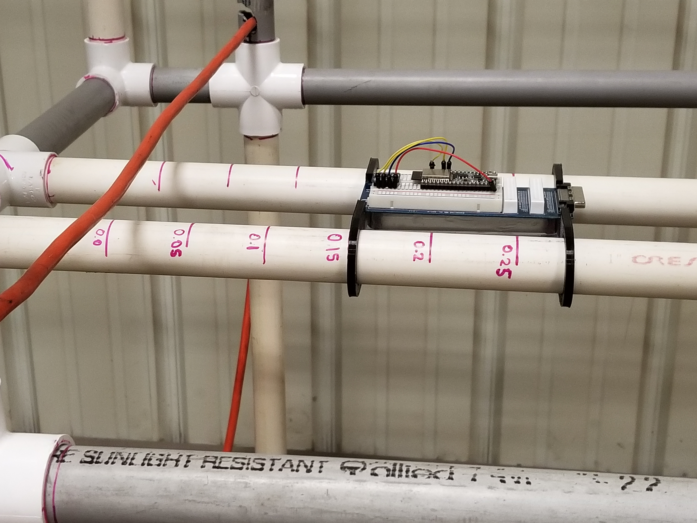
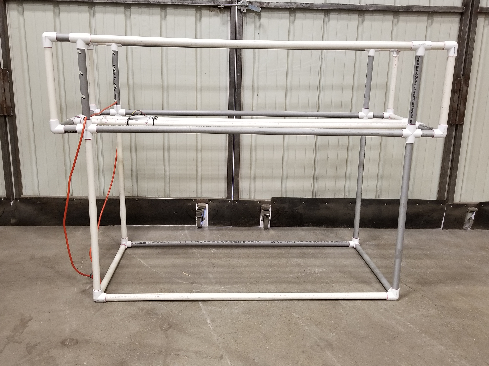

Magnetic Field Variation Detection (MFVD)¶
Summary¶
The problem that this project set out to solve or shed light on, is if the magnetic sphere generated by a current-carrying power line can be detected at its original frequency of 60Hz at any distance from said wire. To accomplish this task, a test enviroment was created that would suspend the wire and sensor above the ground to avoid any distortion caused by the the surrounding area, while also providing a steady platform to repeatably capture data from a magnetometer at varying distances from the suspended wire.
Once completed, the initial data showed fair results. With 7 Amperes (A) being pulled through a wire, the field being produced was detected up to just under 0.1 meters (3.93in) away. At 13.5A, the wire generated a field that was detectable up to 0.15m (5.90in). Finally at 19.5A, the field being generated by the wire could be detected to a distance of 0.2m (7.87in) away. This data was all collected while the magnetometer and wire were in stationary positions. The data indicates that it is possible to distinguish a 60Hz signal from the varying background noise caused by other magnetic objects and or the Earth’s geomagnetic field.
|  |  |
{kind=link}
{kind=link}